Pour les graphistes · gratuit, sans compte, tout est calculé dans ton navigateur
Tes visuels animés, en boucle.
Importe tes images ou tes vidéos, choisis un des 258 modèles — anneaux 3D, carrousels, grilles, decks, showreels… — règle le style, ajoute un titre et ton logo, anime ce que tu veux avec des images clés, puis exporte une vidéo MP4 ou WebM qui boucle parfaitement, en 16:9 comme en 9:16.
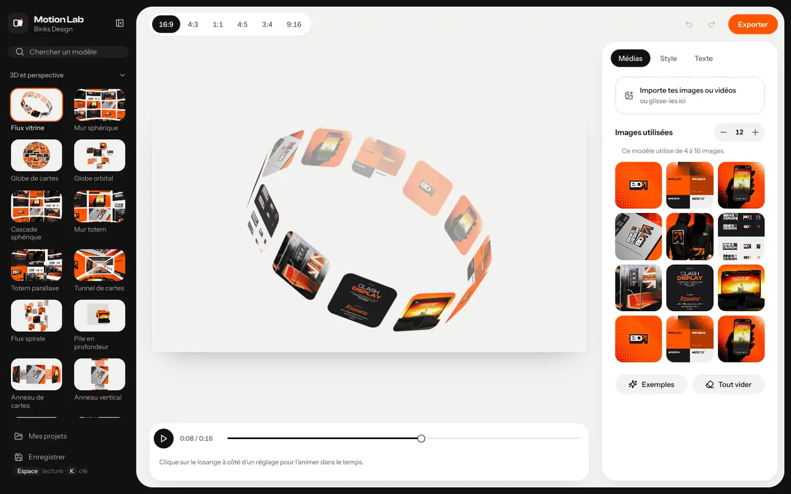
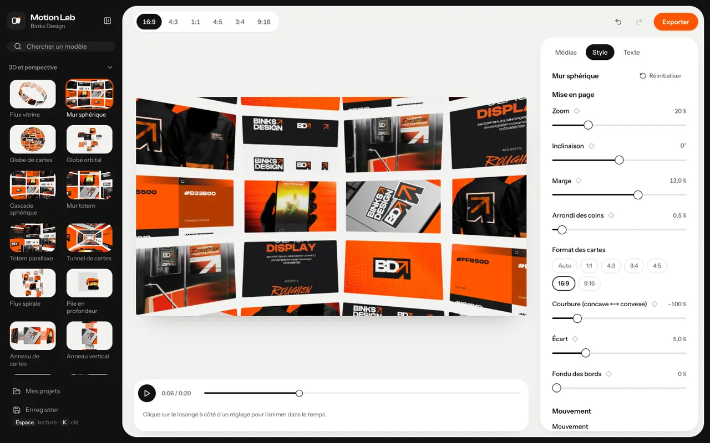
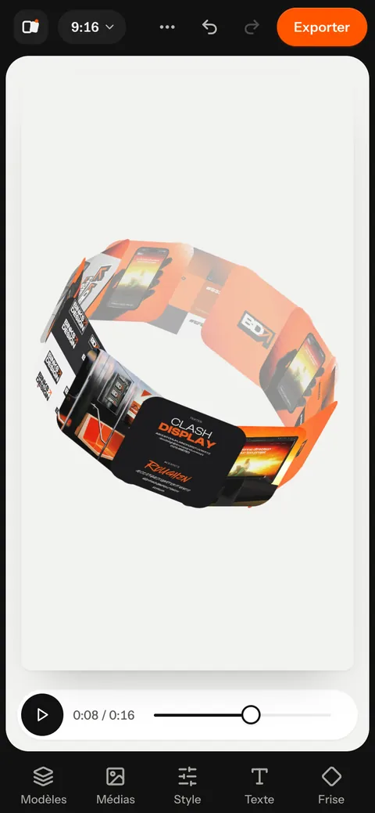
- 258modèles d’animation, en 14 familles
- 6formats de cadre, du 16:9 au 9:16
- 4Ken export vidéo, 8K si ta machine le permet
- 0fichier envoyé sur un serveur
Quatre étapes,une vidéo.
Pas de compte, pas d’installation : tout se passe dans une seule page. L’app s’ouvre avec des visuels d’exemple déjà en place, pour tester tout de suite.
Importe tes médias
Clique sur Tout vider pour retirer les exemples, puis glisse tes images ou tes vidéos sur la page. Recadre, remplace ou réordonne chaque emplacement.
Choisis un modèle et un format
258 modèles en 14 familles, avec une recherche et des vignettes animées. Six formats de cadre : 16:9, 4:3, 1:1, 4:5, 3:4 et 9:16.
Règle, titre, anime
Réglages propres à chaque modèle, fond, durée de la boucle, textes et logo en surimpression. Le losange à côté d’un réglage l’anime dans le temps.
Exporte
Vidéo MP4 ou WebM rendue image par image, en 1080p ou 4K, 30 ou 60 images/s — ou l’image affichée en PNG. Le fichier arrive dans tes téléchargements.
258 modèles,14 familles.
Chaque modèle a sa vignette calculée avec tes visuels, ses propres réglages — mise en page, mouvement, ombre, position — et un bouton Réinitialiser. Le nombre d’images utilisées se règle modèle par modèle.
Médias et emplacements 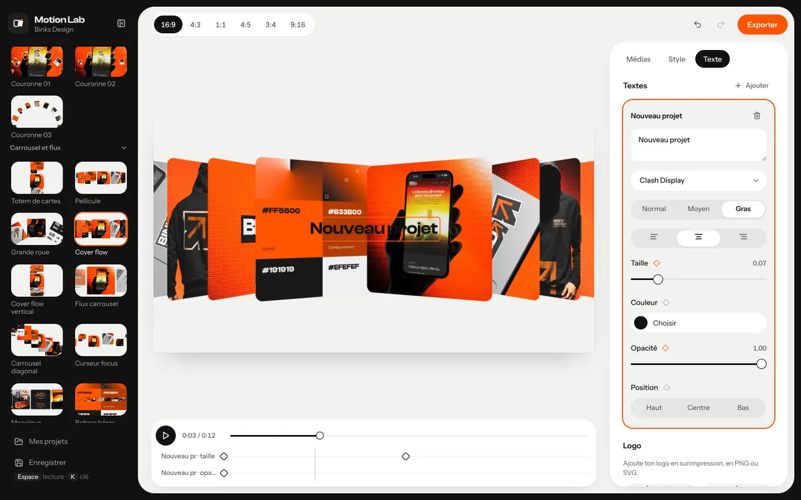
Texte et images clés 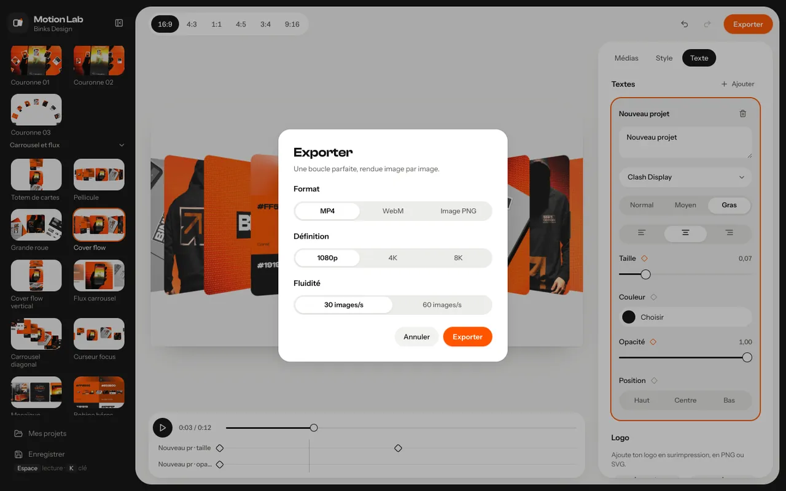
Export MP4, WebM, PNG 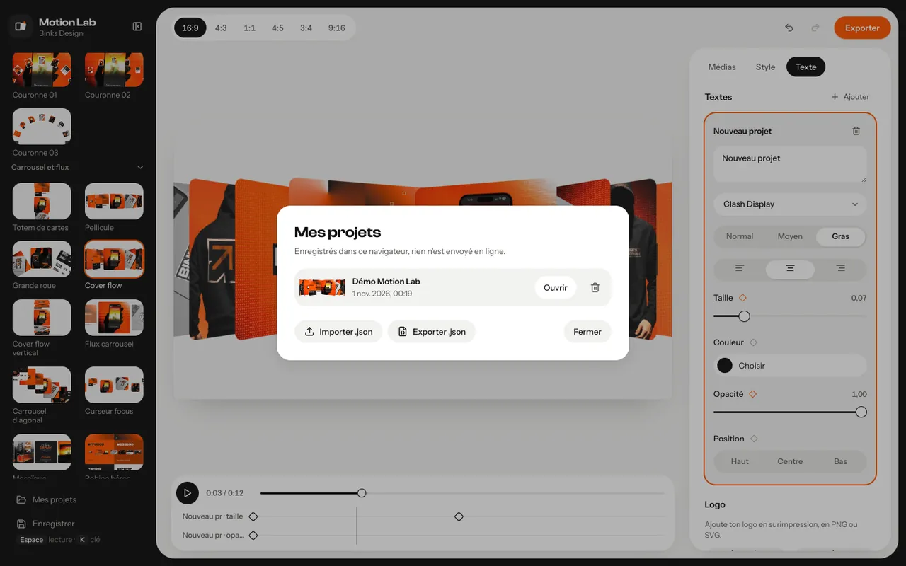
Mes projets
- 013D et perspective · 33 — anneaux, murs sphériques, cubes, couloirs
- 02Multiscène · 14 — rolodex, escalier, triptyque, éventail
- 03Isométrique · 3 — cascade, focus, orbite iso
- 04Orbite · 25 — vitrines orbitales, roues, satellites
- 05Carrousel et flux · 28 — cover flow, pellicule, glissières
- 06Grille · 20 — grilles révélées, tickers, damiers
- 07Projecteur · 8 — scène centrale, zoom parallaxe
- 08Révélation et volet · 7 — volets, bandes, rideaux
- 09Pile et dispersion · 15 — piles, chutes, lancers de cartes
- 10Showreel (séquences) · 16 — claquement, glisse, montée
- 11Défilés · 25 — défilés, bento, colonnes en marche
- 12Decks et pages · 26 — livres, donnes, feuillets
- 13Globes et nuées · 24 — planètes, champs, vrilles
- 14Coupes et pulsations · 14 — flash, toupie, floraison
Un clic,un mouvement.
Rendus réels de l’app, au format 3:4, avec les visuels d’exemple et les réglages par défaut. Change de modèle à tout moment : tes médias, ton texte et ton logo restent en place.
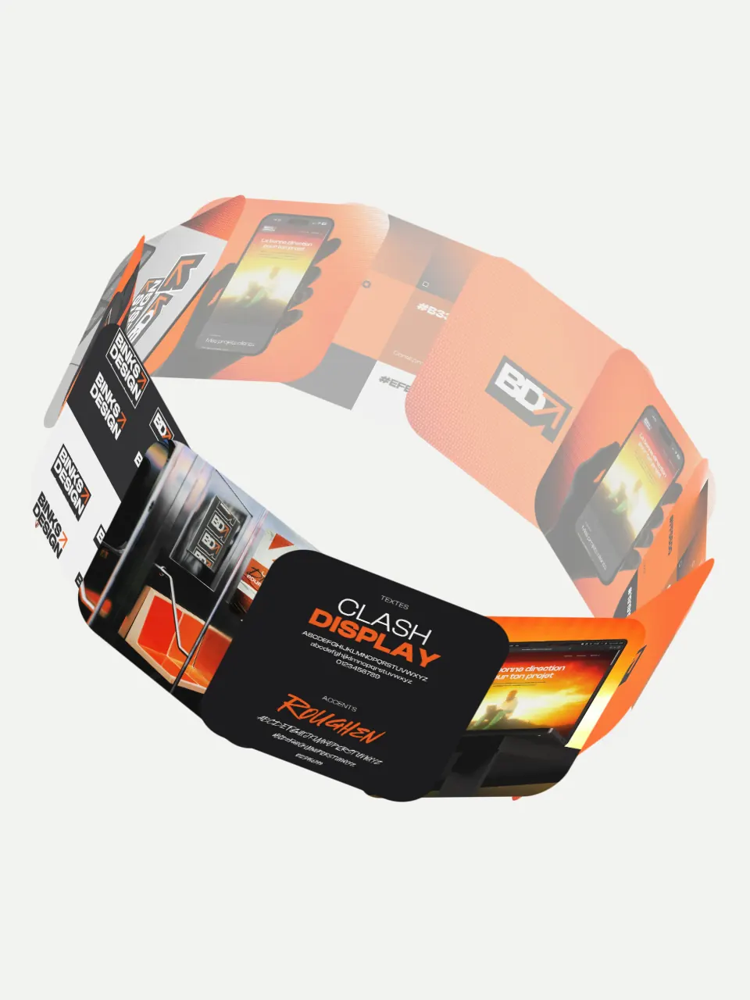
3DFlux vitrine 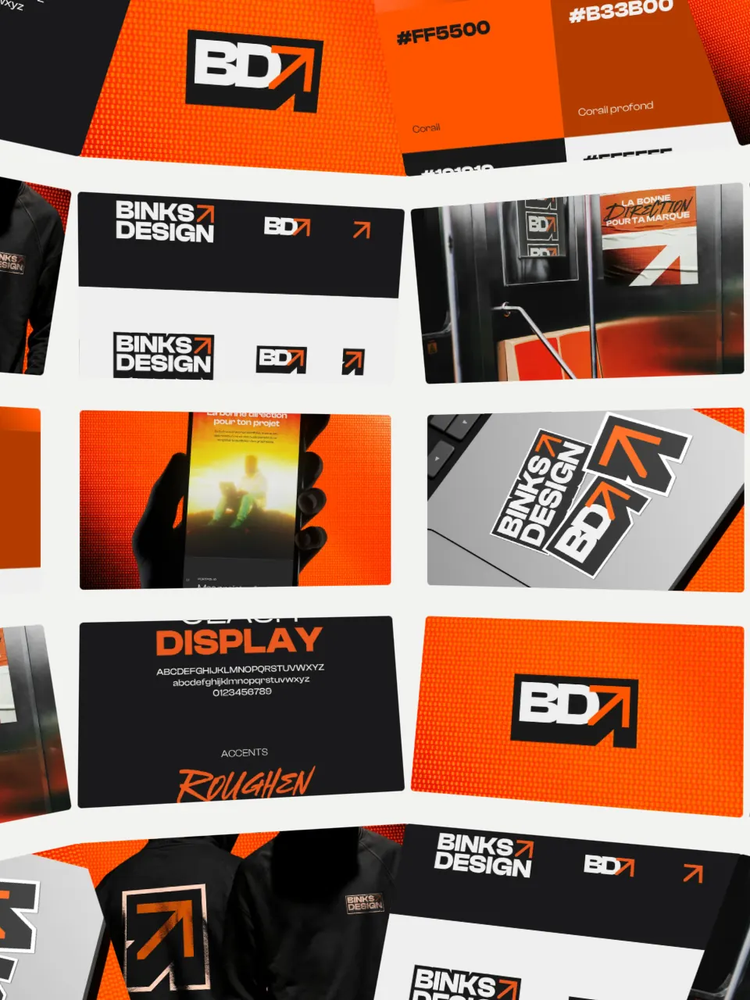
3DMur sphérique 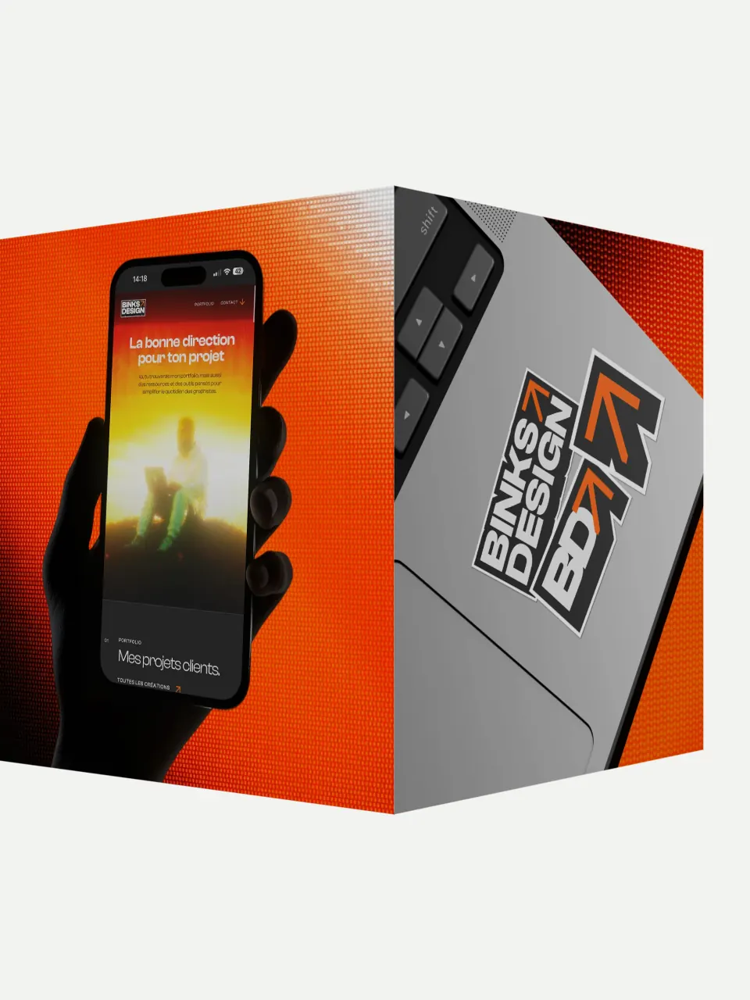
3DCube 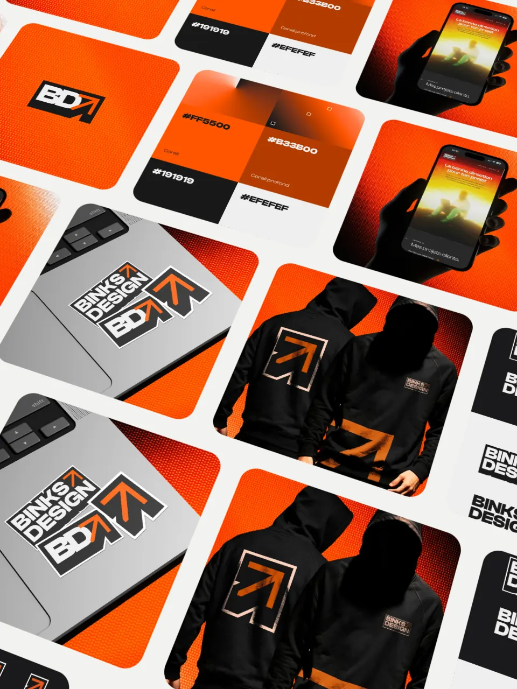
GrilleTicker incliné 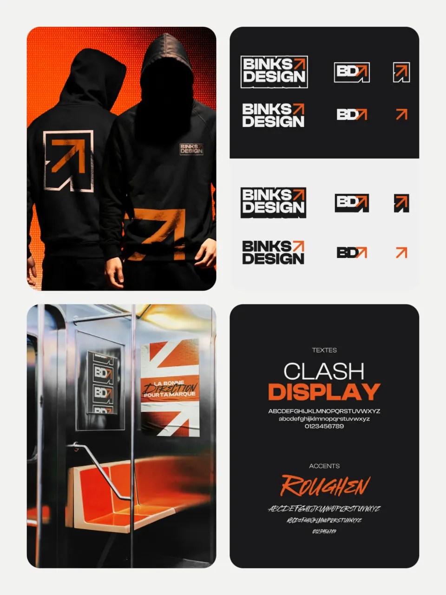
GrilleGrille retournée 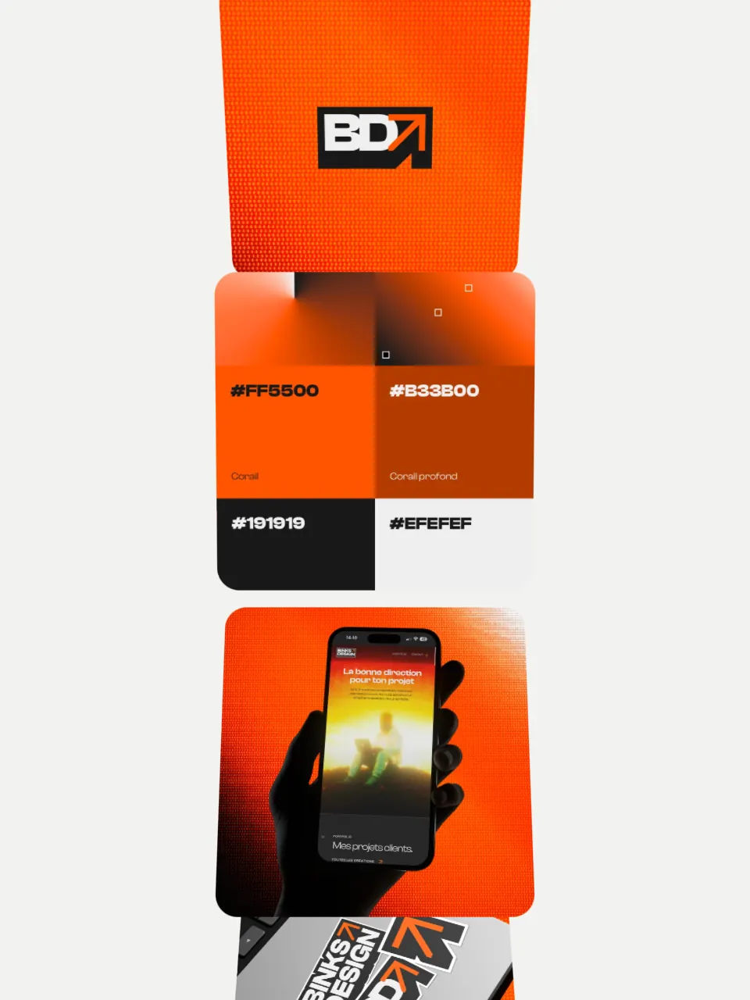
CarrouselTotem de cartes 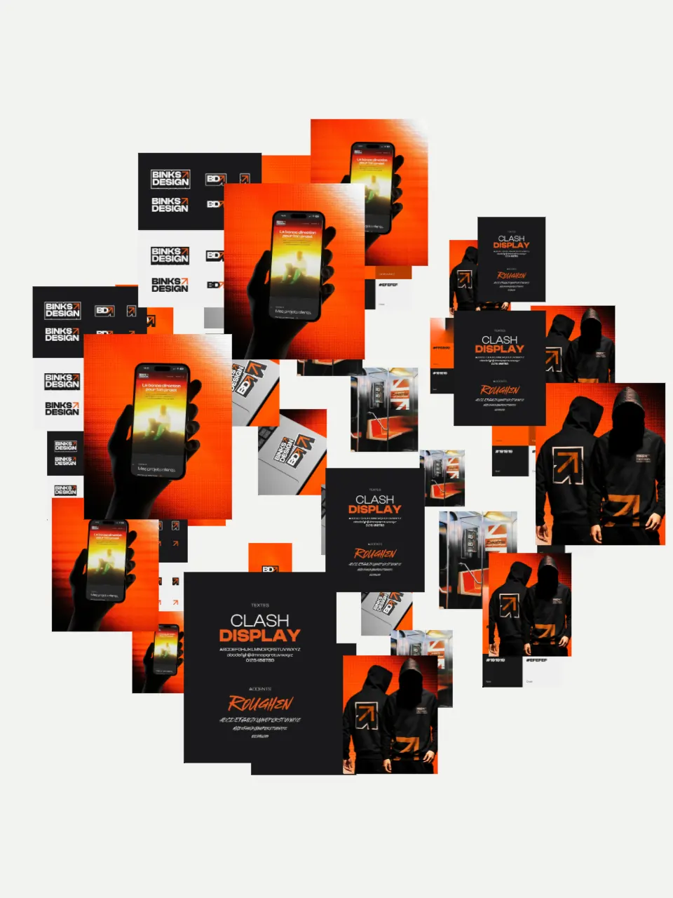
GlobesPlanète 01 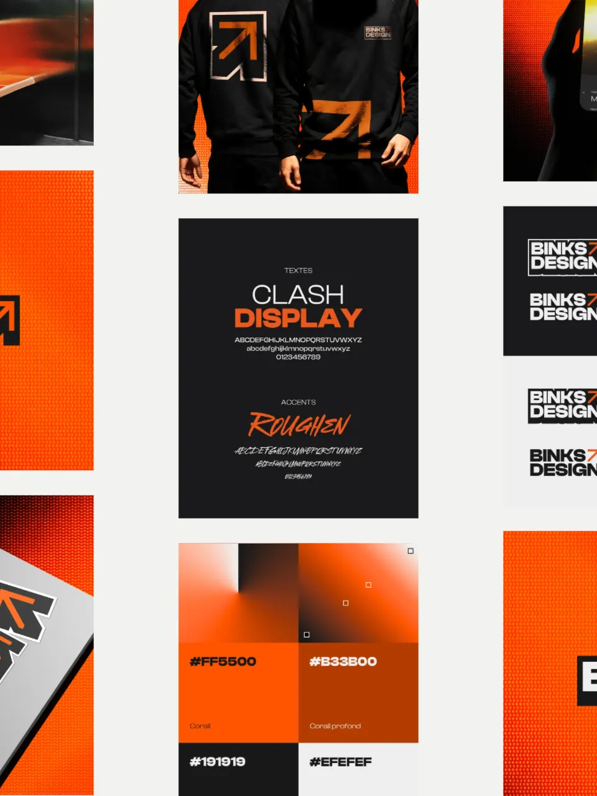
DéfilésDéfilé 01
Ça tourne,et ça boucle.
Chaque modèle est une boucle : la dernière image de l’export enchaîne exactement sur la première. Les images clés suivent la même logique et reviennent à leur point de départ.
- Images clés
Tout réglage s’anime
Le losange à côté d’un curseur ou d’une couleur pose une clé à l’instant courant.
- Réglages du modèle, fond, textes, logo
- Courbes : linéaire, douce, entrée, sortie, maintien
- Frise : glisse les clés pour les déplacer
- Textes et logo
Par-dessus l’animation
Place-les en les faisant glisser sur l’aperçu.
- 4 polices : Instrument Sans, Clash Display, Instrument Serif, DM Mono
- Graisse, alignement, taille, couleur, opacité
- Logo PNG ou SVG, 5 positions rapides
- Cadre
Format, fond, durée
Pour le site, les réseaux ou la présentation client.
- 16:9 · 4:3 · 1:1 · 4:5 · 3:4 · 9:16
- Fond couleur, dégradé ou image
- Boucle de 2 à 40 s (5, 10, 15, 20, 30 s en un clic)
- Export
Vidéo ou image
Rendu image par image, avec progression et annulation.
- MP4 ou WebM, 1080p ou 4K (8K selon la machine)
- 30 ou 60 images/s
- Image PNG de l’instant affiché
- Projet complet en .json
Sur téléphone : sous 900 px de large, l’app passe en mise en page « app » avec une barre d’onglets (Modèles, Médias, Style, Texte, Frise). Une fois la vidéo prête, elle peut passer par la feuille de partage pour aller dans Photos ou Fichiers.
Rien ne quitteton appareil.
Tes visuels restent chez toi : Motion Lab les lit, les anime et encode la vidéo dans le navigateur, avec la carte graphique (WebGL2).
Aucun compte, aucune clé
Pas d’inscription, aucun service en ligne, pas de traceur. Seules les polices de l’interface viennent d’un service de polices en ligne.
Calculé sur place
Rendu 3D, export PNG et encodage MP4 / WebM sont faits localement. Aucun fichier n’est envoyé sur un serveur.
Tes projets dans le navigateur
Tes réglages en cours reviennent au rechargement. « Enregistrer » garde le projet et ses médias dans le navigateur ; l’export .json l’emporte ailleurs.
Pilotablepar un agent.
Claude Code, Codex ou tout agent qui pilote un navigateur peut piloter Motion Lab avec l’API window.BinksyAPI et les outils WebMCP (page MCP), ou par son interface : le mode d’emploi décrit les vrais identifiants et le parcours pas à pas.
- Des repères stables :
#fileIn,#ratios,.tpl[data-id],#exportBtn,#xGo… - Aucune clé API, aucun service en ligne : l’agent travaille dans la page, la vidéo arrive dans les téléchargements.
- Règle d’or : l’agent anime les visuels que tu lui donnes et n’invente ni logo, ni texte de marque.
page.goto("http://127.0.0.1:8000/app.html?fresh")
page.wait_for_function("window.ML_READY === true")
page.set_input_files("#fileIn", ["01.jpg", "02.jpg"])
page.click('#ratios [data-r="9:16"]')
page.click('.tpl[data-id="cover-flow"]')
page.click("#exportBtn")
with page.expect_download(timeout=600_000) as dl:
page.click("#xGo")
dl.value.save_as("reel.mp4") # MP4 1080p 30 i/s par défautTrois façonsde commencer.
Des visuels, un modèle, un export : quelques minutes suffisent pour une première boucle.
- Avec tes visuels
Ouvrir l’app
Glisse tes images ou tes vidéos, choisis un modèle, exporte. Tes réglages de la dernière session reviennent tout seuls.
Ouvrir l’app - Pour repartir de zéro
Session vierge
Ignore les réglages mémorisés et repart du modèle par défaut, avec les visuels d’exemple.
Nouvelle session - Pour tout comprendre
La documentation
Modèles, médias, images clés, textes, export, projets, raccourcis et limites.
Lire la doc